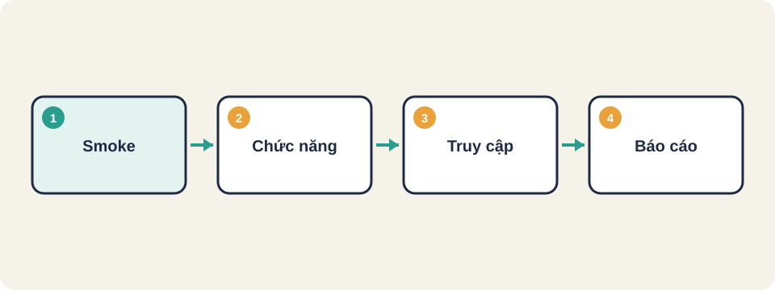
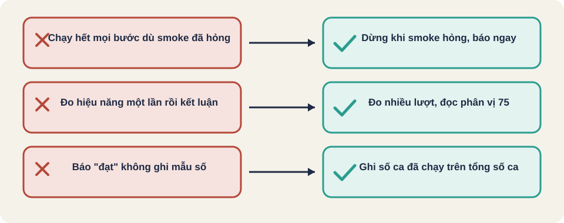

Hình vẽ gốc, dùng để minh họa thứ tự các bước chính của bài.
Từ lúc nhận yêu cầu đến lúc theo dõi sau phát hành: 14 giai đoạn, mỗi giai đoạn có việc cần làm, tiêu chí qua, và bằng chứng cần lưu.

Hình vẽ gốc, dùng để minh họa thứ tự các bước chính của bài.
Bạn nhận một trang đăng ký và thanh toán sắp ra mắt. Không thể kiểm hết mọi thứ. Cần biết kiểm gì trước, theo thứ tự nào, và khi nào được nói "đạt".
Quy trình do người soạn bài tổng hợp từ kiến thức kiểm thử web thông thường. Đây là một gợi ý, không phải chuẩn bắt buộc.
Quy trình do người soạn bài tổng hợp từ kiến thức kiểm thử web thông thường. Đây là một gợi ý, không phải chuẩn bắt buộc.
Quy trình do người soạn bài tổng hợp từ kiến thức kiểm thử web thông thường. Đây là một gợi ý, không phải chuẩn bắt buộc.
Quy trình do người soạn bài tổng hợp từ kiến thức kiểm thử web thông thường. Đây là một gợi ý, không phải chuẩn bắt buộc.
Thuật ngữ trong slide này: Smoke test: Kiểm nhanh các chức năng cốt lõi sau khi build (xem thêm mục Smoke testing).
Quy trình do người soạn bài tổng hợp từ kiến thức kiểm thử web thông thường. Đây là một gợi ý, không phải chuẩn bắt buộc.
Quy trình do người soạn bài tổng hợp từ kiến thức kiểm thử web thông thường. Đây là một gợi ý, không phải chuẩn bắt buộc.
Quy trình do người soạn bài tổng hợp từ kiến thức kiểm thử web thông thường. Đây là một gợi ý, không phải chuẩn bắt buộc.
| Stage | Chạy gì | Cổng qua |
|---|---|---|
| 1. Build | Build, lint | Build thành công |
| 2. Unit | Test đơn vị | Mọi ca pass |
| 3. Smoke | Smoke trên bản vừa build | Mọi mục smoke đạt |
| 4. E2E chính | Luồng ưu tiên cao | Pass, không ca nào bị bỏ |
| 5. Truy cập tự động | Quét tương phản, nhãn | Không có lỗi nghiêm trọng |
| 6. Hiệu năng | Core Web Vitals, ngân sách kích thước | Trong ngưỡng đã đặt |
| 7. Bảo mật | Quét phụ thuộc, quét đầu vào | Không có lỗ hổng mức cao |
| 8. Báo cáo | Gom kết quả và bằng chứng | Đủ bằng chứng |
Quy trình do người soạn bài tổng hợp từ kiến thức kiểm thử web thông thường. Đây là một gợi ý, không phải chuẩn bắt buộc.
Quy trình do người soạn bài tổng hợp từ kiến thức kiểm thử web thông thường. Đây là một gợi ý, không phải chuẩn bắt buộc.
Chỉ còn hai giờ trước khi phát hành. Hãy chọn các giai đoạn phải làm, các giai đoạn có thể để sau, và nêu rõ rủi ro còn lại trong báo cáo.
Quy trình do người soạn bài tổng hợp từ kiến thức kiểm thử web thông thường. Đây là một gợi ý, không phải chuẩn bắt buộc.
Smoke test hỏng ở bước đăng nhập. Có nên chạy tiếp kiểm thử giao diện không? Vì sao, và nên báo cáo gì?
Quy trình do người soạn bài tổng hợp từ kiến thức kiểm thử web thông thường. Đây là một gợi ý, không phải chuẩn bắt buộc.
Thuật ngữ trong slide này: Smoke test: Kiểm nhanh các chức năng cốt lõi sau khi build (xem thêm mục Smoke testing).

Smoke test
Cổng chặn (quality gate)
Ngân sách hiệu năng (performance budget)
HAR